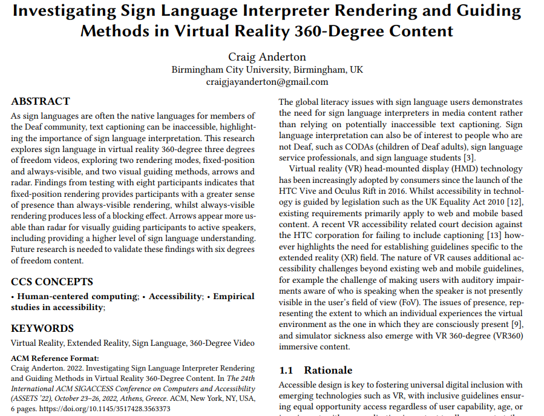
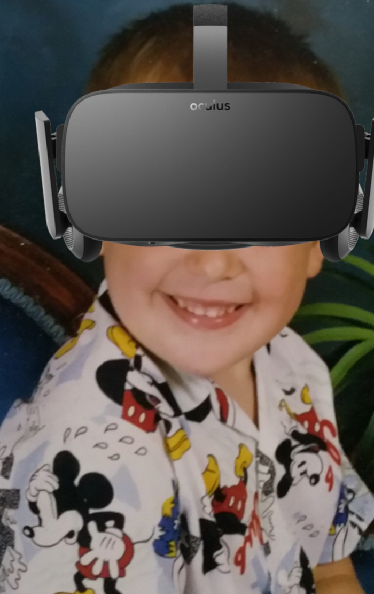
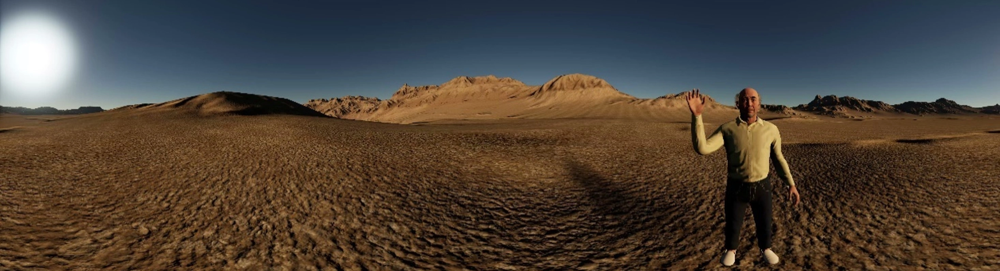
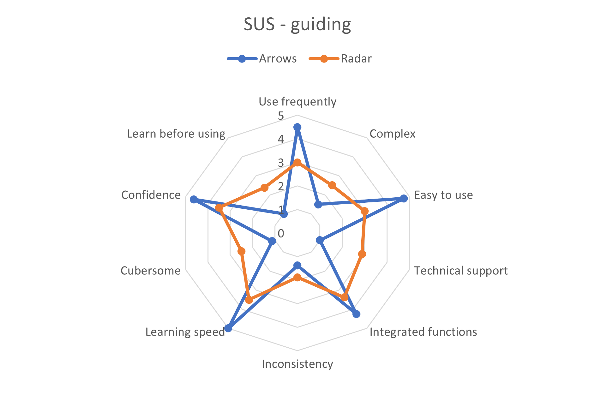
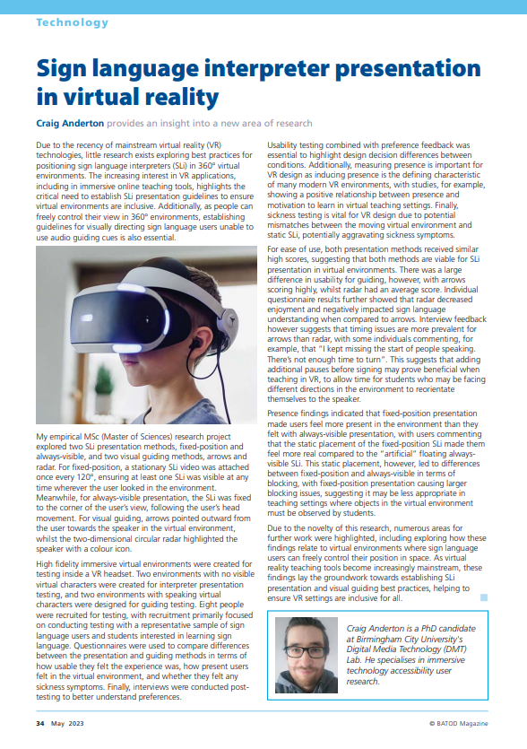

Sign Language in Virtual Reality
Establishing presentation and visual guiding guidelines for 360° virtual environments
Project Overview & Accolades
MSc UX dissertation project exploring sign language in VR, with the objective of establishing guidelines (library link (opens in a new tab) & PDF (opens in a new tab))
- 24th International ACM SIGACCESS Conference on Computers and Accessibility (Core A (opens in a new tab)) - SRC Graduate gold medal winner (opens in a new tab)
- ACM ASSETS '22 Proceeding (PDF (opens in a new tab)) - published short-paper (opens in a new tab)
- BATOD (opens in a new tab) magazine article
- PG XPO 1st place - competition for the top 15 School of Computing post-grad students as voted by industry judges

Tools
- Unreal Engine
- Premiere Pro
- SPSS Statistics
- Word, LaTeX, & PowerPoint
Data gathering
- Controlled experiment
- Semi-structured interviews
- Questionnaires
- In person & online
Timeline
- Overall: 14+ weeks
- Research & Planning: 6 weeks
- Design, Testing, & Writing: 8 weeks
- Post submission: Presentations
Problem Definition
Accessible design is key to fostering universal digital inclusion with emerging technologies such as VR, with inclusive guidelines ensuring equal opportunity access regardless of user capability, age, or impairment. For many members of the Deaf community, sign languages are their primary language. Sign languages are solely visual, which along with the grammar differences between signing and written text, lead to individuals with sign language fluency combined with poor text reading capabilities, highlighting the potential inaccessibility of text captioning.
Whilst sign language interpretation in media is primarily used by sign language fluent Deaf individuals, sign language interpretation can also be of interest to people who are not d/Deaf, such as CODAs, sign language service professionals, and sign language students learning in an online environment.
Literature reviews show that guidelines for sign language in VR are currently based upon adopting best practices from captioning testing results. Building upon these best practices and findings to establish empirically based guidelines for sign language was therefore the main objective of this research, with this research acting as the building block for VR sign language guidelines, along with highlighting new research avenues.


Research Methodology
I created five high-fidelity virtual environments in Unreal Engine, consisting of an acclimatation environment designed to introduce participants to the testing procedure regardless of prior VR experience, two environments with non-visible narrators for interpreter presentation testing, and two environments with speaking virtual characters for guiding testing. Eight videos were produced in Premiere Pro and Unreal Engine VR game mode, allowing for counterbalancing of environments and conditions.
Unreal Engine was chosen as the high-resolution photogrammetry assets allowed for the creation of highly immersive environments, negating the low fidelity impacting presence issue found in my previous VR testing. Each video was between three and four minutes in length, allowing time for participants to view the full environment whilst not becoming fatigued by the device.

A within-subject two-factor independent variable design was followed, with two independent variables, each with two levels. Within-subject design was chosen as it requires fewer participants to run, as well as minimising errors occurring from individual differences, for example VR experience or BSL fluency.
- Fixed-position rendering means the sign language interpreter video was attached to the video sphere, with a video located once every 120°, ensuring at least one interpreter is visible at any time.
- Always-visible rendering means the interpreter was attached to the participant's FoV via use of the HUD.
- Guiding arrows point outwards towards the currently active speaker following best practice AR guiding findings.
- The circular two-dimensional radar highlights the active speaker with a coloured icon, with the participant represented in the centre of the circle and their current FoV represented as a blue triangle.
Participants were encouraged to follow the think-aloud protocol whilst viewing the 360° videos in an Oculus Rift HMD device, with questionnaire feedback after each video measuring usability (SUS), user experience metrics (adapted from the UX framework), presence (IPQ), and sickness (VRSQ). Finally, a semi-structured interview was conducted to allow for thematic analysis.
- Usability and UX testing are key to identifying accessibility issues, and combined with preference feedback, is essential to explore any potential usability and accessibility differences between conditions with a high degree of consistency
- Measuring presence is essential for VR design, as inducing presence is the defining characteristic of many modern VR virtual environments
- Presence however is a complex psychological phenomenon, with literature indicating a negative relationship between presence and sickness, along with a potential mismatch between the moving background image and static foreground sign language interpreter element potentially impacting postural stability
Testing
Following similar VR caption studies, eight participants were recruited for testing. Recruitment primarily focused on conducting testing with a representative sample of participants, including sign language users and people interested in learning sign language. A more general approach to recruitment of participants with diverse capabilities was followed rather than following a disability medical model approach focused solely on impairments.
Demographic data was obtained for participants, half of who were female, showing an age range between 24 and 64 years old. Testing took between 45 to 85 minutes per participant. There were no technical issues during the experiment and no testing conditions caused undue discomfort.
Findings & Discussion
Presence
Significant differences were found between always-visible and fixed-position. It appears that the static placement of the interpreter on the video sphere led to this difference, with fixed-position interpreters feeling more present in the environment than floating always-visible interpreters.
This however led to differences between fixed-position and always-visible in terms of blocking, with the static placement of the interpreter used with fixed-position having a strong negative impact.
Usability & UX
Both presentation methods scored A+ for usability, suggesting that both methods are viable for sign language presentation.
There was a large difference in usability for guiding, with arrows scoring A+, whilst radar scored C-. Individual UX questions showed that radar decreased enjoyment and negatively impacted sign language understanding compared to arrows.
Qualitative Feedback
The majority of presence comments for always-visible were negative, with multiple participants mentioning the interpreter HUD presentation made the environment feel artificial.
All participants quickly understood how to interpret the arrows, whilst multiple participants took time to understand the radar. An issue highlighted by the arrows however was timing, with participants missing parts of the sign language as they turned their head. Further testing is required with pauses to allow for turning.
“It feels like she’s in my personal space. . . I get this feeling that I want to back off from her. She feels intrusive”
Fixed-position (P6)

Similar usability and UX scores between the rendering modes suggests that both fixed-position and always-visible rendering are viable for sign language presentation in VR. Findings suggest that if immersion is the key characteristic for a virtual environment, fixed-position rendering appears to be the better choice than always-visible rendering due to offering increased levels of overall presence, spatial presence, and involvement. On the other hand, if clarity of content within the virtual environment is a higher priority than presence, the reduced blocking offered by always-visible rendering appears to make it the preferred choice.
Meanwhile, the large usability issues with radar guiding suggests that arrows appear to be the optimal visual guiding method. Feedback however suggests that timing issues are more prevalent for arrows than radar and must be addressed with further testing.
Presenting Results
After writing the report, PowerPoint A1 posters and presentation slides were produced to present results for supervisors (online viva voce), students and industry judges (in person PG XPO), and leading accessibility researchers (online ASSETS '22 conference). Each presentation also consisted of a live Q&A.
The dissertation was adapted in to a conference paper for the ACM ASSETS '22 Proceeding and an adapted version was published in an academic magazine explaining how findings are relevant for teachers of Deaf pupils.

.webp)
Reflections
Overall this project taught me a great deal about conducting empirical studies in accessibility, from initial research identifying gaps through to presenting findings.
Due to the novelty of the research, numerous areas for further work were highlighted:
- Six degrees of freedom exploration - how do these findings relate to virtual environments where participants can control their position in space?
- Does altering sign language presentation impact comprehension testing results?
- How can gaze be used? For example, pausing when users are looking away from the sign language interpreter to allow for head movement, or moving to reduce blocking
Due to funding and recruitment issues, the lack of involvement of participants with profound hearing loss is a large problem with this research. This issue limits the suitability of using these findings in commercial products, with the research acting primarily as a groundwork study to encourage further work exploring sign language.
Overall, as demonstrated by the honours and awards received from presenting findings, the project was a great success in terms of personal research growth.
Thank you for reading about my dissertation!
Feel free to contact me for any further questions!